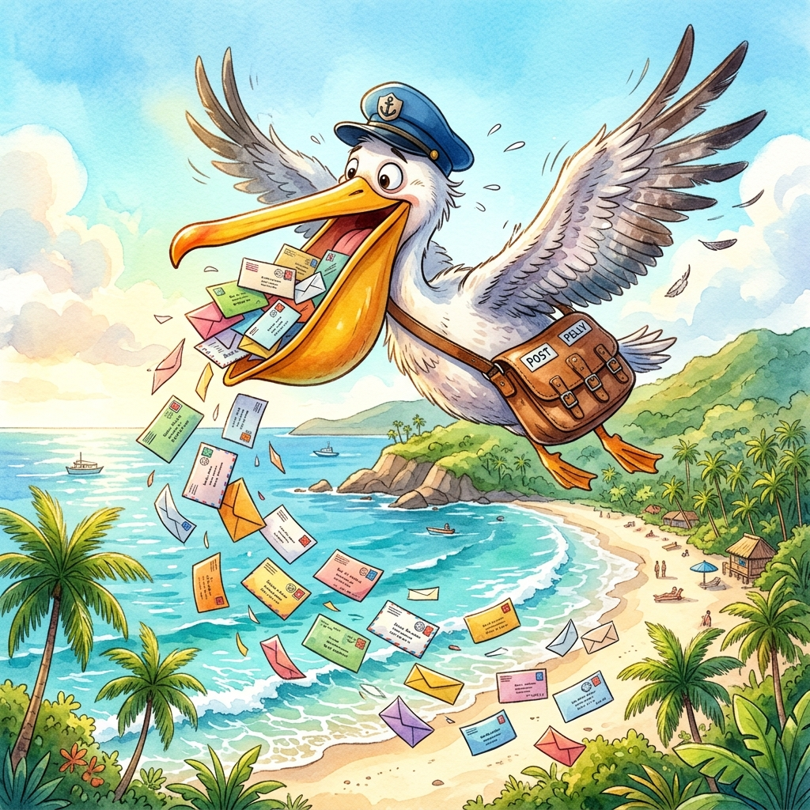
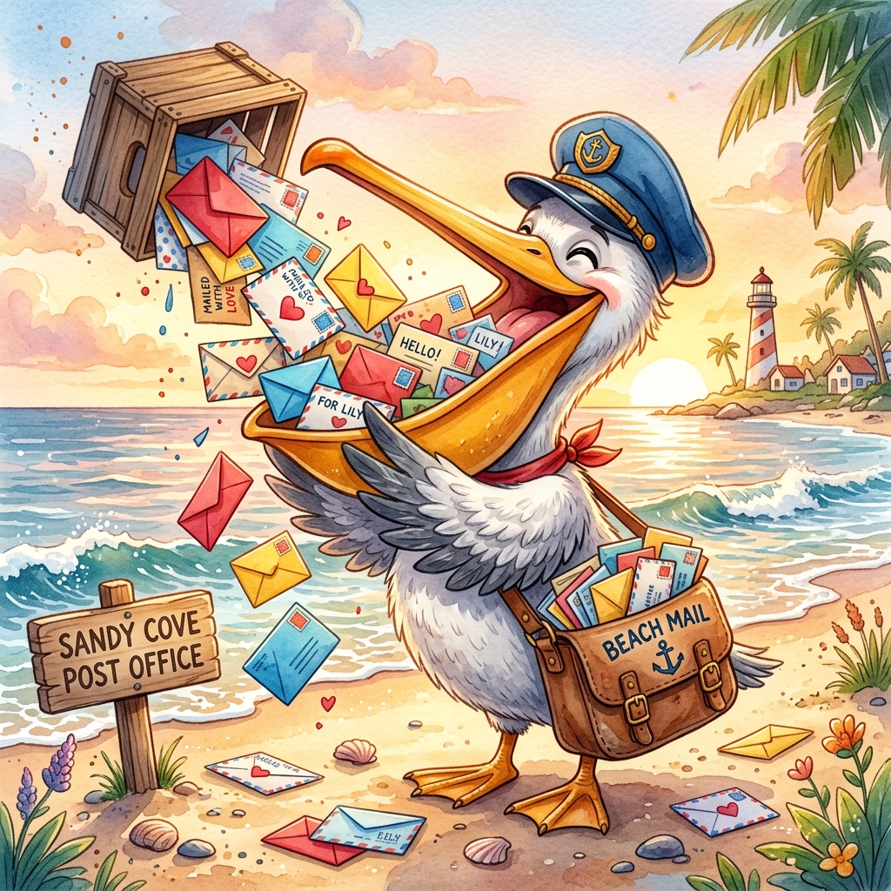
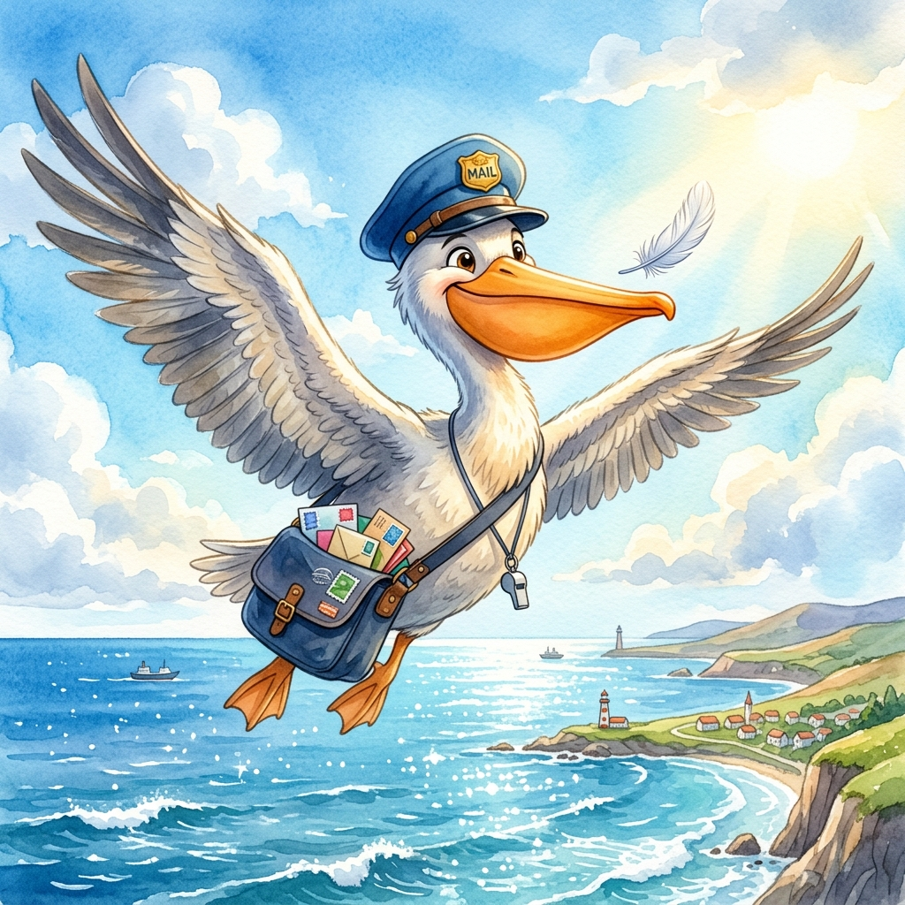
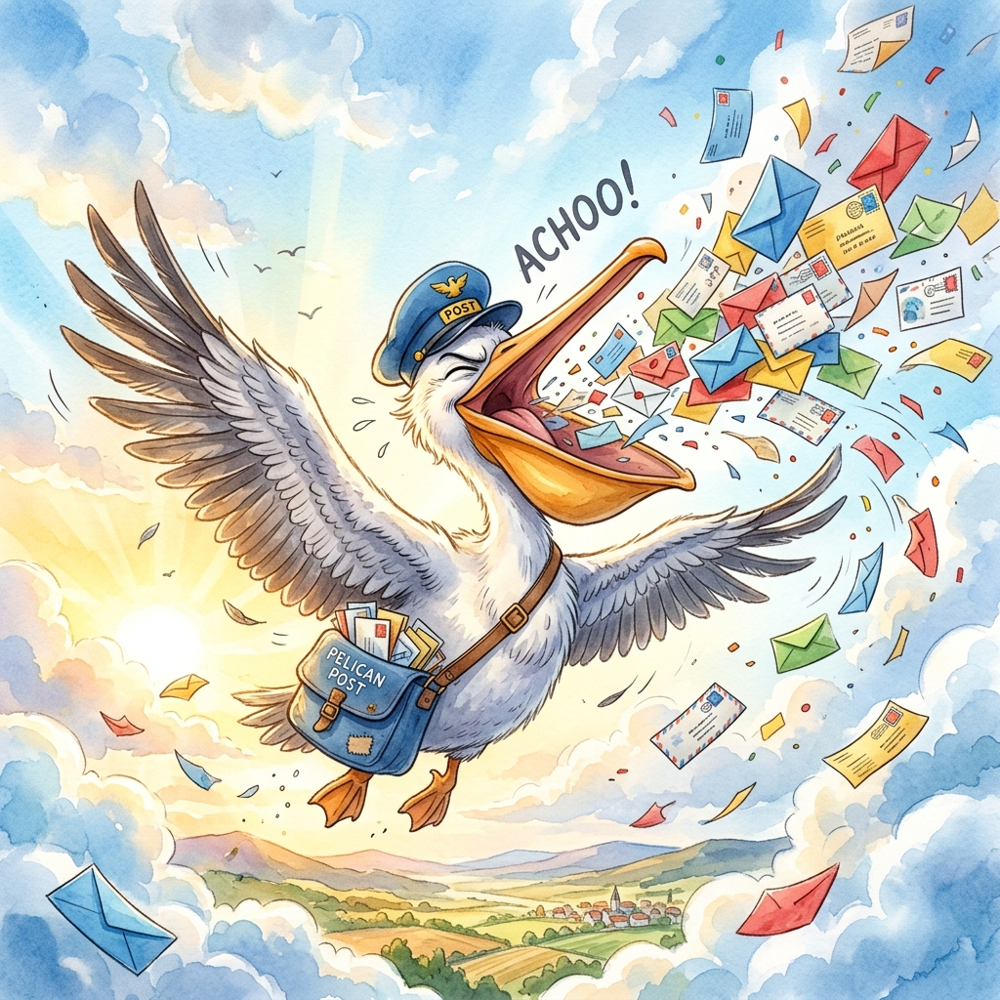
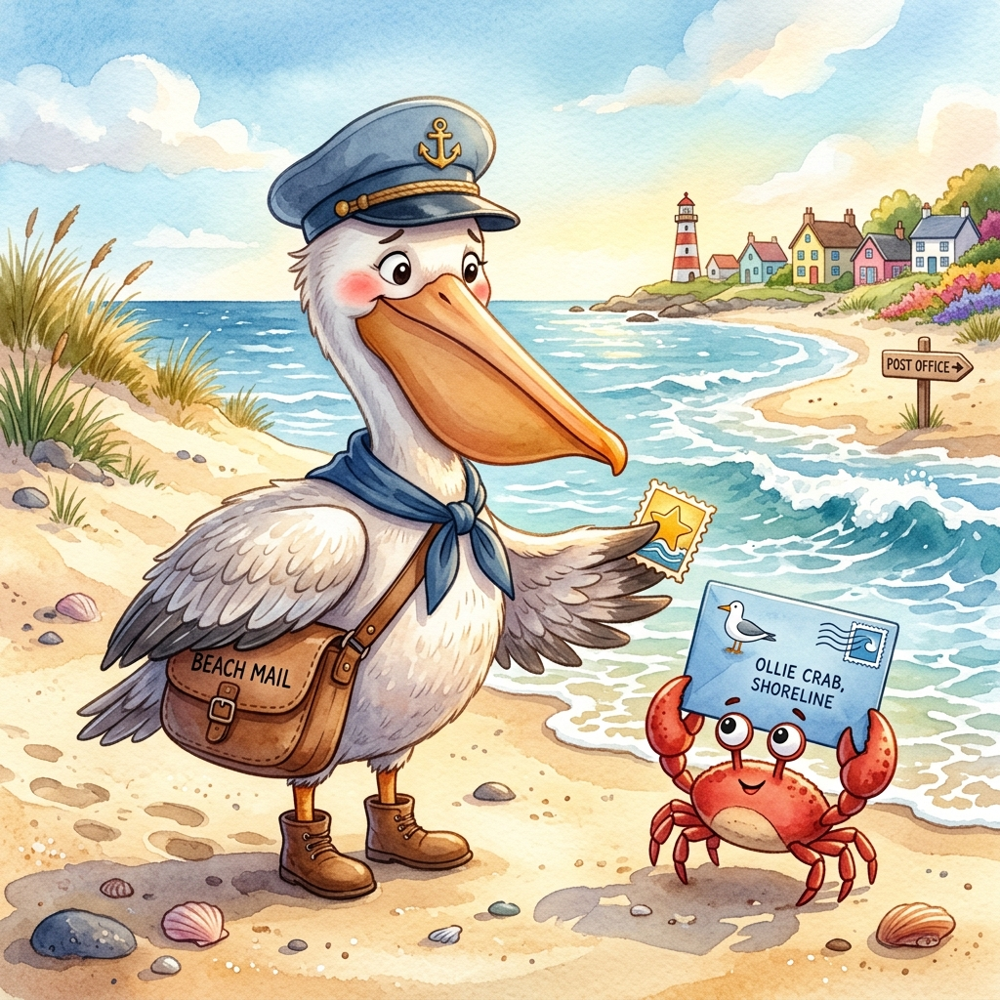

Paco
Le Pélican Facteur
Attention à la livraison ! 📨 Paco perd un peu son courrier au-dessus de la plage...
La Chanson de Paco
(Si la musique s'ouvre au lieu de se télécharger, fais un clic-droit sur le bouton puis "Enregistrer le lien sous...")
Imprime tes Coloriages
{kind=link}
{kind=link}
{kind=link}
La Casquette de Facteur
Fabrique ta propre casquette bleue pour aider Paco à distribuer le courrier sans rien perdre !
✂️ Patron de la CasquetteL'Histoire de Paco

Le soleil se lève doucement sur la plage de sable fin, peignant l'écume en rose. Paco le pélican, le facteur le plus fier de l'île, commence sa journée. Avec un soin tout particulier, il ouvre grand son bec élastique — qui lui sert de sac postal — et y glisse une montagne de lettres, des colis mystérieux et des cartes postales parfumées. Une fois son bec bien rempli, il ajuste sa casquette de facteur et se prépare au décollage.

D'un grand coup d'ailes puissant, Paco s'élance dans l'immensité du ciel bleu. Il survole les palmiers et les vagues qui scintillent. Tout est calme, jusqu'au moment où une petite plume blanche, légère comme un nuage, se détache de son aile. Portée par une brise malicieuse, la plume vient se poser pile sur le bout de son nez. Paco fronce les narines, ses yeux se mettent à piquer... ça chatouille terriblement !

Paco essaie de résister, il gonfle ses joues, il ferme les yeux très fort, mais c'est plus fort que lui. "AAA... AAA... ATCHOUM !" Un éternuement tonitruant secoue tout son corps, des pattes jusqu'au bout des ailes. Dans la secousse, son bec s'ouvre brusquement et tout le courrier s'échappe ! Des centaines d'enveloppes colorées tourbillonnent dans les airs, dansant dans le vent comme une pluie de confettis géants au-dessus de l'océan.

En bas, sur la plage, Monsieur le Crabe profite d'un bain de soleil, les pinces en éventail. Soudain, "Pof !", une grande enveloppe bleue atterrit pile sur sa tête, lui cachant la vue. Un instant plus tard, Paco se pose lourdement à ses côtés, l'air tout penaud. "Oups ! Mille excuses, Monsieur le Crabe !" dit le pélican en ramassant la lettre. Pour réparer sa maladresse, Paco offre au crabe un joli timbre brillant.
Le Savais-tu ?
La poche sous le bec du pélican s'appelle un "gousset" ! 👝
Elle est magique : elle peut s'étirer comme un gros ballon pour attraper jusqu'à 13 litres d'eau et de
poissons ! C'est presque deux seaux d'eau entiers cachés sous son menton.
Pratique pour porter le courrier !
✉️